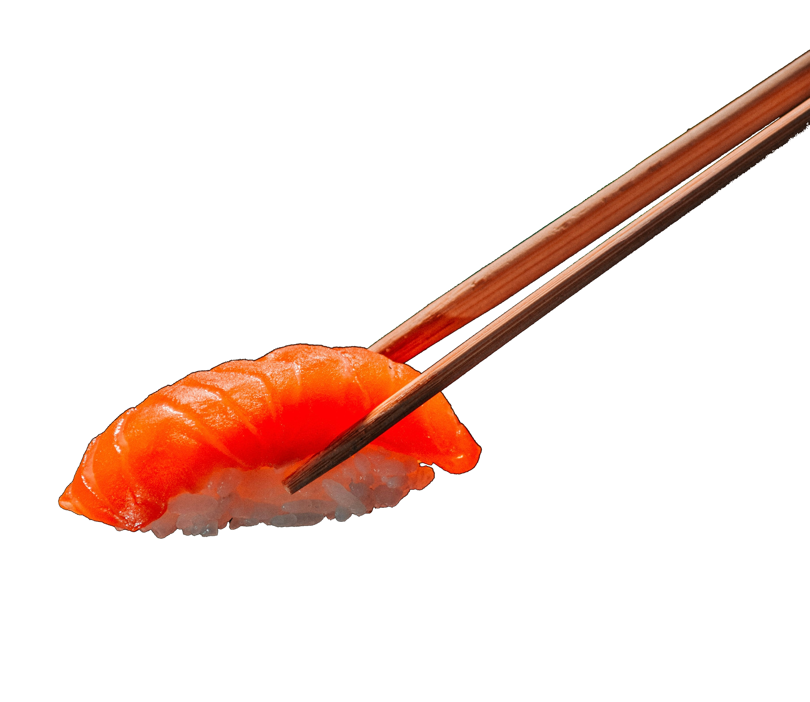
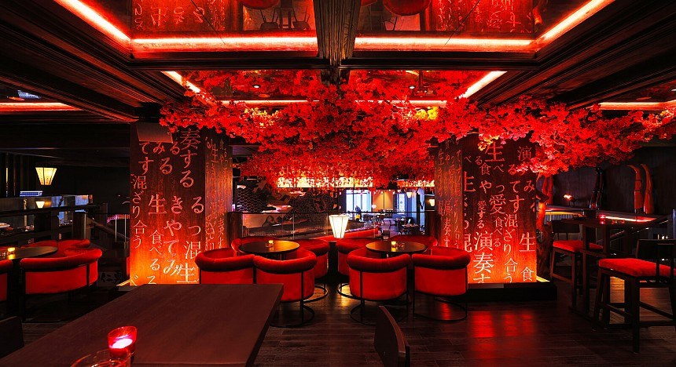
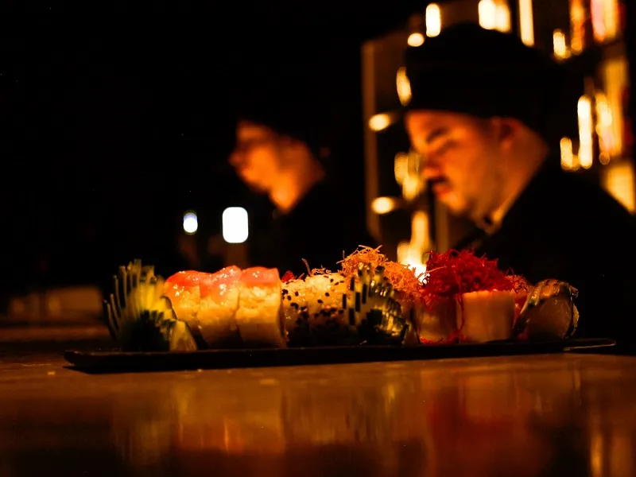
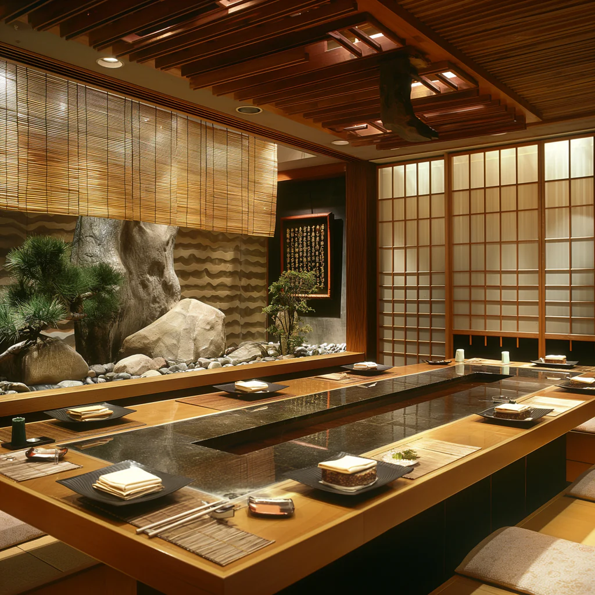

Edición 2026 - Barranquilla
El sabor de oriente en el Caribe
Cinco días de gastronomía japonesa fusionada con el espíritu del Caribe colombiano. Más de 20 restaurantes compiten por el mejor rollo de autor.
Restaurantes Galería
Programa
Horarios y eventos
Del 15 al 19 de mayo de 2026. Cada día trae una experiencia diferente: talleres, catas, shows y la ruta de restaurantes participantes.

Jue 15 mayo · 6:00 PM Ceremonia de apertura Vie 16 mayo · 10:00 AM
Taller: Rollos de autor
Vie 16 mayo · 10:00 AM
Taller: Rollos de autor
 Sáb 17 mayo · 3:00 PM
Cata de sake y mariscos
Sáb 17 mayo · 3:00 PM
Cata de sake y mariscos

Dom 18 mayo · 12:00 PM Ruta gastronómica barranquillera
Dom 18 mayo · 6:00 PM Cata de licores y sushi Lun 19 mayo · 7:00 PM
Gran final y premiación
Lun 19 mayo · 7:00 PM
Gran final y premiación
Nuestros Chefs
| Nombre | Especialidad | Experiencia (años) | País | Plato estrella |
|---|---|---|---|---|
| Hiroshi Tanaka | Omakase | 25 | Japón | Nigiri de atún toro |
| Kenji Sato | Sushi tradicional | 18 | Japón | Salmón con yuzu |
| María López | Sushi fusión | 10 | Colombia | Roll tropical de mango |
| David Kim | Sushi moderno | 12 | Corea del Sur | Roll picante de cangrejo |
| Lucas Ferreira | Sushi creativo | 8 | Brasil | Roll de tempura con maracuyá |